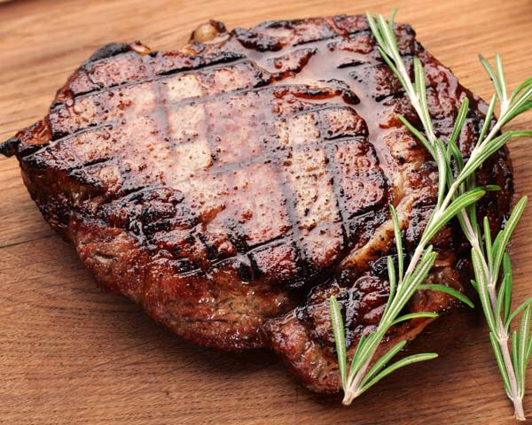

Grilled Steak

Ingredients
- 4 eight-ounce boneless rib-eye, New York strip steak, or filets mignons, trimmed
- 2 tablespoons olive oil
- Morton Kosher Salt
- Fresh ground black pepper
Directions
- Remove the steaks from the refrigerator and let them sit, covered, for about 20 minutes before grilling to let them come to room temperature.
- Preheat your grill to high. Brush each of the steaks on both sides with oil and salt and pepper. Place the steaks on the grill and cook until they are golden brown and slightly charred in areas, about 4-5 minutes on each side for medium-rare. Cook the steaks to the desired doneness.
- Transfer the steaks to a clean cutting board or platter, cover loosely with foil, and let rest 5 minutes before slicing. Slice meat against the grain.